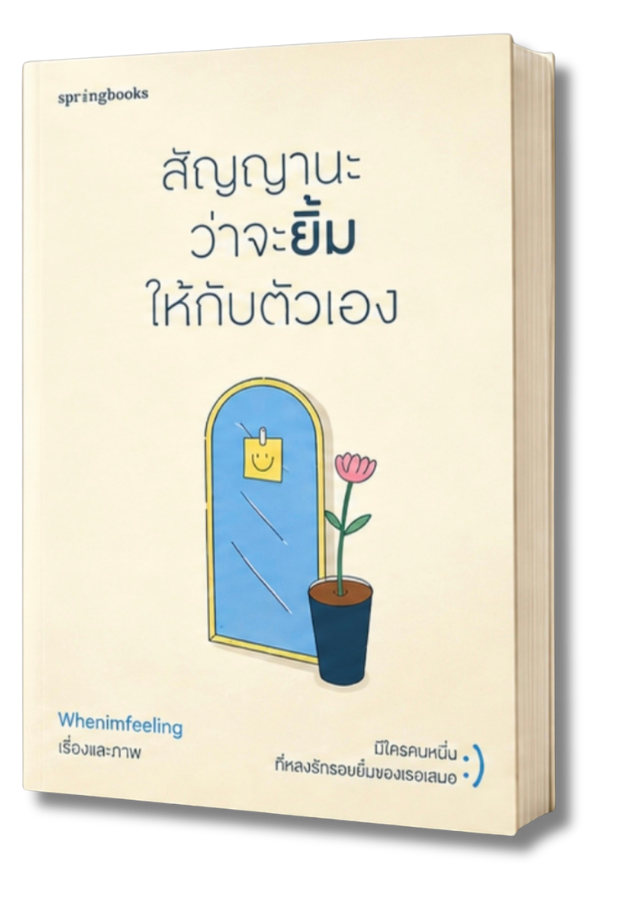
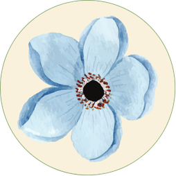
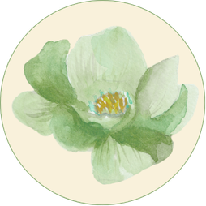
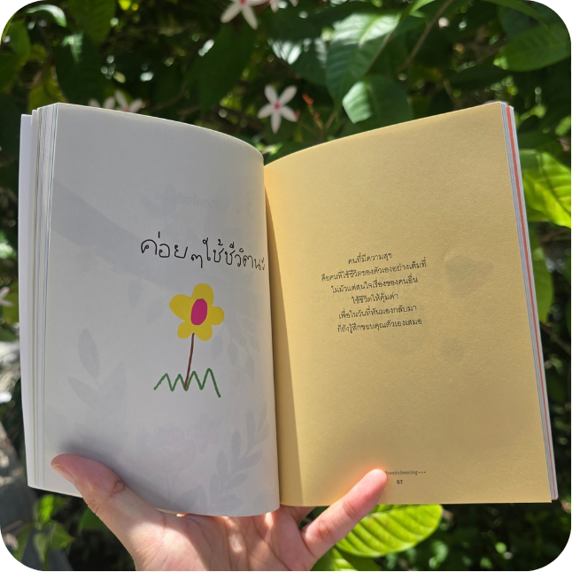
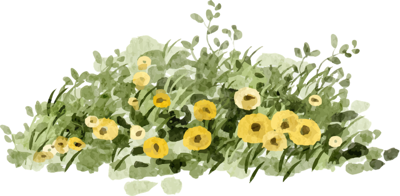
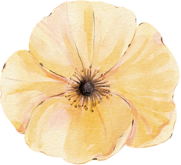
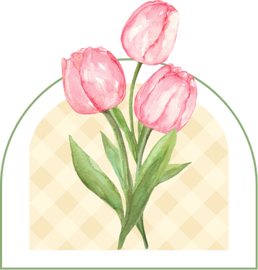
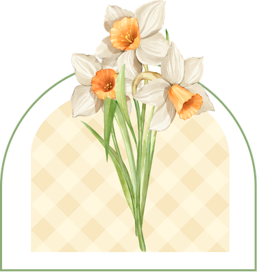
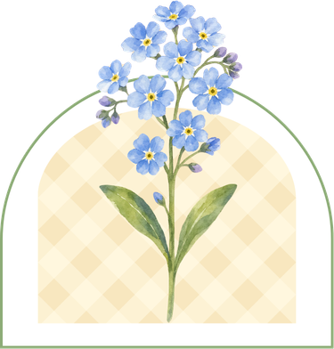

หนังสือที่ถ่ายทอดเรื่องราวเกี่ยวกับการรักตัวเอง การยอมรับความรู้สึก และการใช้ชีวิตในแต่ละวัน ผ่านข้อความและภาพประกอบที่อบอุ่นใจ พาเราไปทำความเข้าใจทั้งความสุข ความเหนื่อยล้า และความรู้สึกที่เกิดขึ้นภายในใจ พร้อมสะท้อนให้เห็นว่า แม้ในวันที่ชีวิตไม่เป็นอย่างที่หวัง เรายังคงมีเรื่องราวเล็ก ๆ ที่ทำให้ยิ้มได้เสมอ
เรื่องและภาพ : Whenimfeeling
สำนักพิมพ์ : springbooks
หมวดหมู่ : พัฒนาตัวเอง

ช่วยเติมพลังใจในวันที่เหนื่อยล้า
ชวนให้เห็นคุณค่าและใส่ใจความรู้สึกของตัวเอง
ชวนให้หยุดคิดและทบทวนความรู้สึก
ข้อความชวนให้ใส่ใจกับเรื่องเล็ก ๆ ในชีวิต
หนังสือ "สัญญานะว่าจะยิ้มให้กับตัวเอง" เหมาะสำหรับผู้ที่อยากเริ่มต้นอ่านหนังสือแนวฮีลใจ ด้วยข้อความที่อ่านง่ายและภาพประกอบที่ช่วยถ่ายทอดความรู้สึก ทำให้การอ่านไม่ใช่เรื่องยากหรือจำเป็นต้องใช้เวลามาก สามารถค่อย ๆ เปิดอ่านทีละหน้าในช่วงเวลาว่าง และซึมซับเรื่องราวไปตามความรู้สึกของตัวเองได้อย่างสบายใจ
“ไม่จำเป็นต้องมีพื้นฐานการอ่าน ก็สามารถเริ่มต้นทำความรู้จักกับเรื่องราวดี ๆ ได้”


คนที่ชอบอ่านหนังสือฮีลใจ

คนที่อยากใช้เวลาอยู่กับตัวเอง

คนที่อยากมองในมุมที่อ่อนโยน